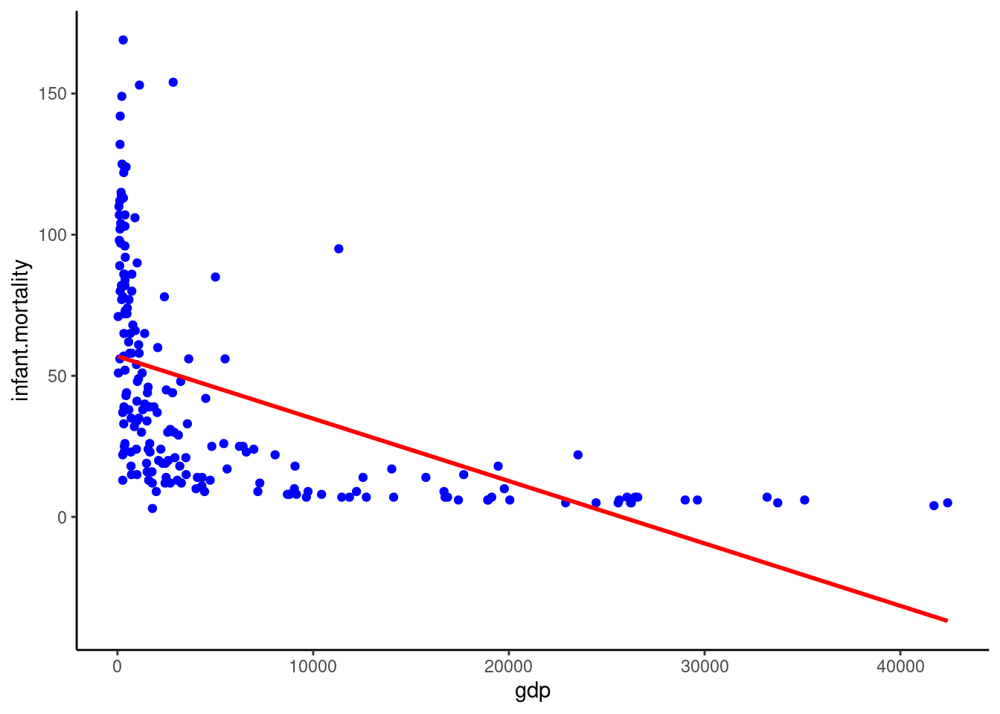
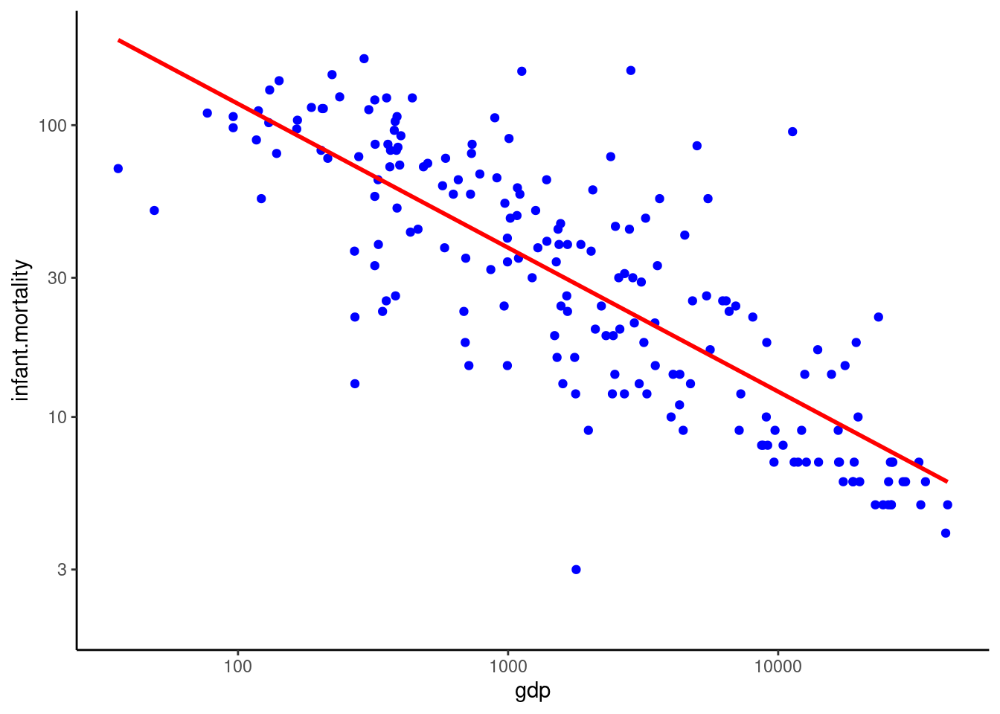
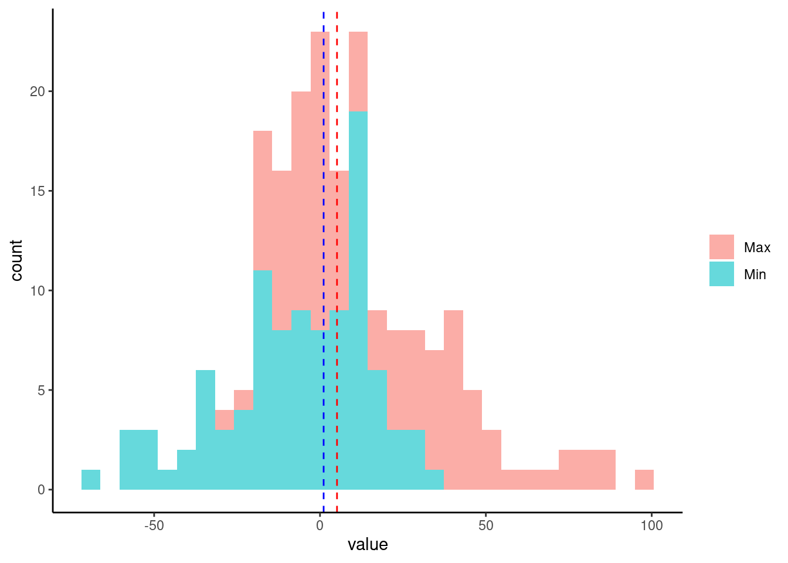
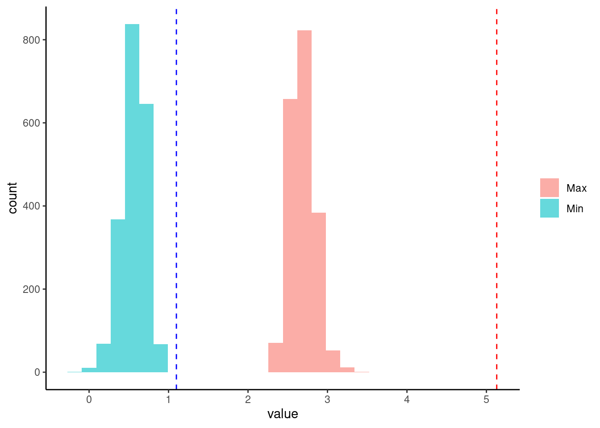

| Barack Obama | Baby clothes | Bayes | |
|---|---|---|---|
| Bar | 50% | 30% | 30% |
| Bab | 30% | 60% | 30% |
| Bay | 20% | 10% | 40% |
Chapter 07 Problem Sets
Problem 7.1 Googling
Suppose you are chosen, for your knowledge of Bayesian statistics, to work at Google as a search traffic analyst. Based on historical data you have the data shown in Table 7.1 for the actual word searched, and the starting string (the first three letters typed in a search). It is your job to help make the search engines faster, by reducing the search-space for the machines to lookup each time a person types.
Problem 7.1.1
Find the minimum coverage confidence intervals of topics that are at least at 70%.
In both cases (here and the next question) we are looking for sets of the actual words. Frequentists assume that the data we receive (each set of three letters) is a sample from an infinity of such experiments. As such they design their intervals such that at least 70% of such intervals contain the true word searched across all the potential data samples we could receive. This means that here we want to choose sets such that regardless of the three letters typed we get a coverage of at least 70% for each of the columns. These are shown in Table 2.
Confidence intervals = \(P(Data | \theta) \ge 70\%\)
| Barack Obama | Baby clothes | Bayes | Credibillity | |
|---|---|---|---|---|
| Bar | [50%] | 30% | 30% | 45% |
| Bab | 30% | [60% | 30%] | 75% |
| Bay | [20% | 10% | 40%] | 100% |
| Coverage | 70% | 70% | 70% |
Problem 7.1.2
Find most narrow credible intervals for topics that are at least at 70%. Now we suppose that your boss gives you the historic search information shown in Table 3.
Further, you are told that it is most important to correctly suggest the actual topic as one of the first auto-complete options, irrespective of the topic searched.
| Barack Obama | Baby clothes | Bayes | |
|---|---|---|---|
| Search Volume | 60% | 30% | 10% |
Bayesians condition of the data we actually receive, and derive intervals based on this information.
This means we need to consider the individual row sums; each time making an interval that exceeds at least 70% of that row. The answer for this question is shown in Table 4.
Now we suppose that your boss gives you the historic search information shown in Table 3. Further, you are told that it is most important to correctly suggest the actual topic as one of the first auto-complete options, irrespective of the topic searched.
Credible intervals = \(P(\theta | Data) \ge 70\%\)
| Barack Obama | Baby clothes | Bayes | Credibillity | |
|---|---|---|---|---|
| Bar | [50% | 30%] | 30% | 73% |
| Bab | 30% | [60% | 30%] | 75% |
| Bay | 20% | [10% | 40%] | 71% |
| Coverage | 50% | 100% | 70% |
Problem 7.1.3.
Do you prefer confidence intervals or credible intervals in this circumstance?
Here all we need to do is work out the total losses under the confidence and credible intervals. For both cases this means we need to work out the expected loss for each of the actual words being searched, using the volumes given in Table 3. This is easily done using the coverages at the bottom of each of tables Table 2 and Table 4.
For the confidence intervals we thus get an expected loss:
\[ loss = 0.6 × (1 − 0.7) + 0.3 × (1 − 0.7) + 0.1 × (1 − 0.7) = 0.3 \] And for credible intervals:
\[ loss = 0.6 × (1 − 0.5) + 0.3 × (1 − 1) + 0.1 × (1 − 0.7) = 0.33 \]
So in this circumstance we prefer the confidence intervals.
Problem 7.1.4
Now assume that it is most important to pick the correct actual word across all potential sets of three letters, which interval do you prefer now?
Now we need to find the loss for each possible three letter search. This requires that we first of all calculate the historic search volumes for these letters using Tables Table 1 and @Table 3. Specifically you take the matrix product of the two, yielding a percentage of historical searches of (42%, 39%, 19%, \(P(Data|\theta)P(\theta) = P(Data, \theta)\)) credible interval tables respectively to weight the losses.
For confidence intervals: \[ loss = 0.42 × (1 − 0.45) + 0.39 × (1 − 0.75) + 0.19 × (1 − 1) = 0.33 \] And for credible intervals: \[ loss = 0.42 × (1 − 0.73) + 0.39 × (1 − 0.75) + 0.19 × (1 − 0.71) = 0.27 \] So in this case we prefer the credible intervals.
Problem 7.2 GDP versus infant mortality
The data in posterior_gdpInfantMortality.csv contains the GDP per capita (in real terms) and infant mortality across a large sample of countries in 1998.
Problem 7.2.1
A simple model is fitted to the data of the form:
\[ M_i \sim N ( α + β GDP_i , σ ) . \]
Fit this model to the data using a Frequentist approach. How well does the model fit the data?

Problem 7.2.2
An alternative model is:
\[ \log(M_i) \sim N ( α + β \log(GDP_i) , σ ) . \]

Problem 7.2.3
Construct 80% confidence intervals for \(( α , β )\).
| term | conf.low | conf.high |
|---|---|---|
| (Intercept) | 6.79 | 7.30 |
| log(gdp) | −0.53 | −0.46 |
Problem 7.2.4
We have fitted the log–log model to the data using Markov chain Monte Carlo. Samples from the posterior for \(( α , β , σ )\) are contained within the file posterior_posteriorsGdpInfantMortality.csv. Using this data, find the 80% credible intervals for all parameters (assuming these intervals to be symmetric about the median). How do these compare with the confidence intervals calculated above for \(( α , β )\) ? How does the point estimate of σ from the Frequentist approach above compare?
| term | conf.low | conf.high |
|---|---|---|
| alpha | 6.80 | 7.29 |
| beta | −0.52 | −0.46 |
| sigma | 0.56 | 0.64 |
Problem 7.2.5
The following priors were used for the three parameters:
\[ \begin{aligned} α &\sim N (0,10),\\ β &\sim N (0,10),\\ σ &\sim N (0,5),σ \ge 0 \end{aligned} \]
Explain any similarity between the confidence and credible intervals in this case.
Here the priors are very diffuse over the range of possible range of the parameters. To a (rough) approximation this is equivalent to a flat prior on the parameters. This means from Bayes’ rule we have (approximately):
\[ p(θ|X) ∝ p(X|θ) \] Therefore the confidence and credible intervals are going to be largely similar here.
Problem 7.2.6
How are the estimates of parameters \(( α , β , σ )\) correlated? Why?
\(α\) and \(β\) are negatively correlated. This is because we want a line that goes through the centre of the data: if the y intercept increases then the slope must decrease.
round(cor(df2$alpha, df2$beta), 2)[1] -0.98Problem 7.2.7
Generate samples from the prior predictive distribution. How do the minimum and maximum of the prior predictive distribution compare with the actual data?
The prior predictive distributions show about two orders of magnitude greater variation in data compared to the actual data

Problem 7.2.8
Generate samples from the posterior predictive distribution, and compare these with the actual data. How well does the model fit the data?
There are a number of ways to compare the model vs the data here. I have just used the min and max as a point of comparison. What we see with these is that the minimum is captured well by the model, but the max isn’t. In particular the variation seen in fitted model is greater than that in the data. This is because at low values of GDP there could be a deviation from the log-log model (or it’s just due to sampling variation, of course).
